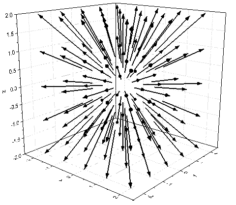
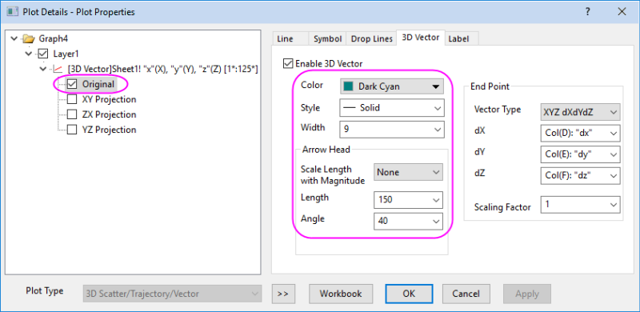
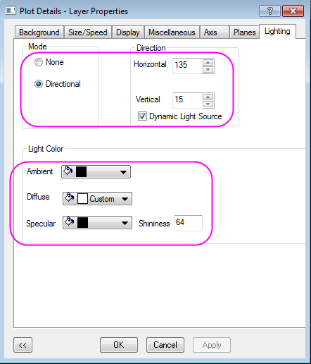
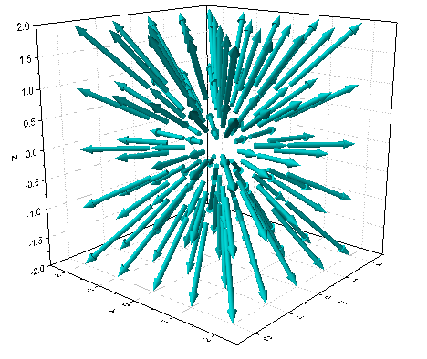

3D-Vektor
3D-Vektor
Zusammenfassung
Origin kann 3D-Vektoren aus den zwei verschiedenen Datenstrukturen XYZ XYZ und XYZ dXdYdZ zeichnen.
XYZ XYZ definiert die Start- und Endpunktdaten für den Vektor, während XYZ dXdYdZ die Endpunktdaten des Vektors und den Abstand zwischen den Start- und Endpunktprojektionen auf der X-, Y- und Z-Achse enthält.
Was Sie lernen werden
- 3D-Vektor aus XYZ dXdYdZ-Arbeitsblattdaten erstellen
- 3D-Vektor benutzerdefiniert anpassen
Schritte
Dieses Tutorial basiert auf dem Projekt: <Origin-Verzeichnis>\Samples\Tutorial Data.opj.
Sie können dieses Diagramm auch im Lernzentrum finden. (Wählen Sie Hilfe: Lernzentrum im Menü oder drücken Sie die Taste F11. Öffnen Sie dann Diagrammbeispiel: 3D Symbol Bar and Wall.)
- Öffnen Sie Tutorial Data.opj und navigieren Sie zum Ordner 3D Vector im Projekt Explorer (PE).
- Wählen Sie die Arbeitsmappe Book51A aus. Klicken Sie in die obere, linke Ecke des Arbeitsblatts, um alle Daten zu markieren.
- Wählen Sie im Menü Zeichnen: 3D: 3D-Vektor XYZ dXdYdZ. Mit der Standardvorlage wird ein 3D-Vektordiagramm wird erstellt.
- 
- Klicken Sie zum Öffnen des Dialogs Details Zeichnung doppelt auf das Vektordiagramm. Stellen Sie sicher, dass das Vektordiagramm Original im linken Bereich des Dialogs ausgewählt wurde. Wechseln Sie zur Registerkarte 3D-Vektor.
- Legen Sie im Dialog Details Zeichnung auf der Registerkarte 3D-Vektor die Parameter wie im folgenden Bild zu sehen fest. Klicken Sie auf die Schaltfläche Farbe und wählen Sie Dunkelgrün im Menü.
- 
- Klicken Sie auf OK, um diese Einstellungen anzuwenden und den Dialog zu schließen.
- Wechseln Sie zur Registerkarte Beleuchtung im Dialog Format: Layer.... Legen Sie die Beleuchtung gemäß dem Bild unten fest:
- 
- Drehen Sie die Grafik in eine geeignete Perspektive. Das Ergebnisdiagramm sollte folgendermaßen aussehen:
- 